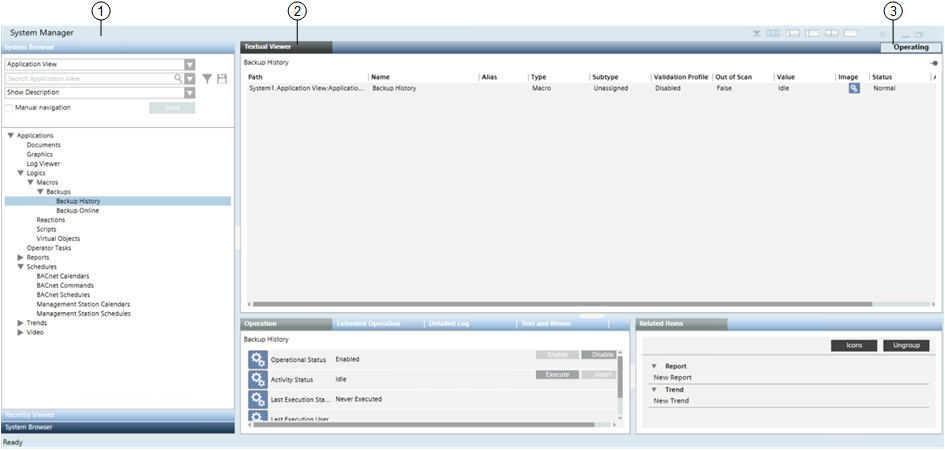
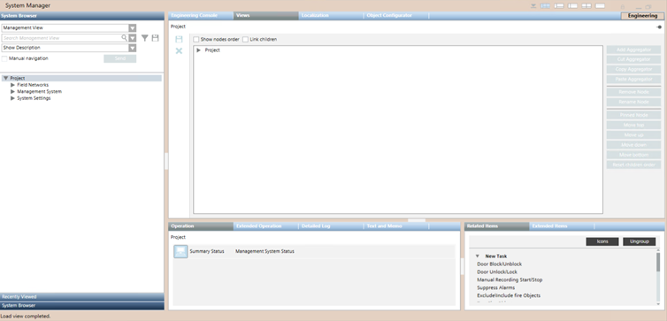

Operating and Engineering Mode
When you log onto Desigo CC, System Manager starts in Operating mode. This is the mode typically used by operators during the day-to-day running of the Desigo CC management station. Configuring the system instead requires switching over to Engineering mode.
Operating Mode
In Operating mode, you can monitor and control the facility, for example by verifying site statuses, handling alarms, checking graphics, generating reports, and so on. If you have appropriate user rights, you can also perform some limited configuration tasks (for example, editing graphics, schedules, and so on) in Operating mode.

1 | System Manager Operating mode is indicated by a light blue color. |
2 | Depending on the object selected in System Browser, the Primary pane displays only the Textual Viewer tab or the Textual Viewer and other tabs. Each tab gives access to the related operating application. |
3 | The Operating button is available only if you have access rights for Engineering mode; otherwise, it does not display. If available, this button lets you toggle System Manager between Operating mode and Engineering mode. |
Engineering Mode
Engineering mode is a feature of Desigo CC that enables authorized technicians to configure a project. In Engineering mode, the Primary pane of System Manager presents all the tools for configuring the site project, including import/export capabilities.
If you have the appropriate permission (System Management application rights set for your user group under Security), the Primary pane of System Manager displays an button that you can use to switch to Engineering mode.
You can click the button to switch the system back to Operating mode and check whether the configurations you made work correctly.


The application rights can only be changed in Engineering mode. So if you do not have engineering rights, these can only be enabled for you by another user who already has engineering rights. After this happens, the Operating/Engineering button will display in System Manager.
To fully configure a site project you may also require a special Engineering Mode License, which temporarily gives access to the whole software’s functionality.